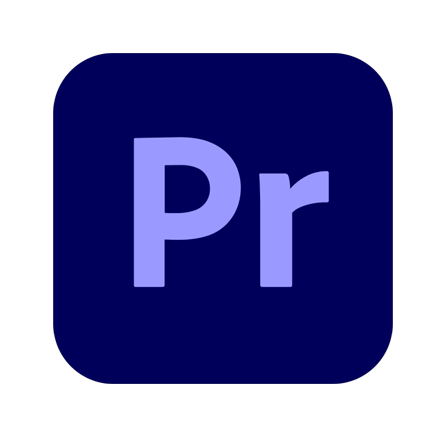
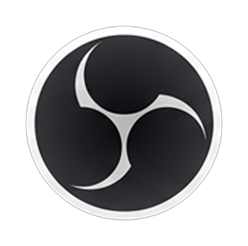
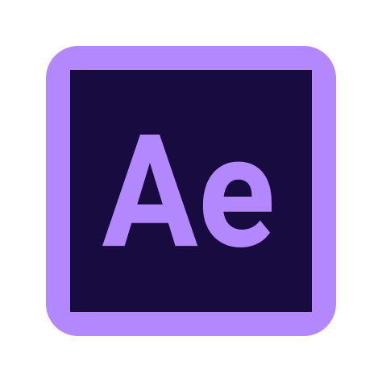
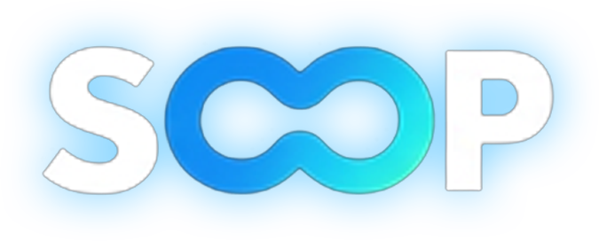
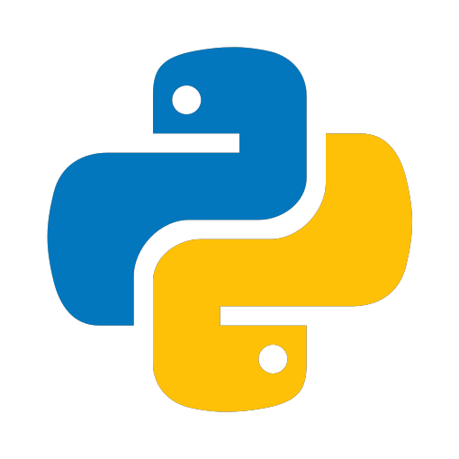

혼자가 아닌 같이 뛰겠습니다
편집만 하는 게 아닌 다재다능한 편집자
RECENT EXPERIENCE
유튜버 김인호컴퍼니 · 소속 직원(월급제)
김성대 본채널 + 풀채널 총괄담당 · 2023.12.12 – 2026.02.01 (자진퇴사)
메인 채널 통합 편집과 썸네일 총괄


게임·합방 콘텐츠 중심으로 메인 채널 편집/썸네일을 통합 운영했습니다.
시청 흐름에 맞춘 컷 분배와 교차 편집으로 몰입도를 설계했습니다.
풀영상 채널 운영과 아카이빙


실시간 녹화 기반으로 아카이빙 구조를 정리하고 운영했습니다.
저작권 이슈를 사전 정리해 빠른 업로드 루틴을 구축했습니다.
대회 및 대규모 콘텐츠 방송 UI 제작

대회·중계 콘텐츠 방송 UI를 직접 설계·제작했습니다.
스코어/스폰서/정보 배치를 정리해 현장감을 완성했습니다.

콘텐츠 공지와 포스터 디자인
채널 공지·포스터를 직접 제작해 정보 전달력을 높였습니다.
톤&매너를 유지하며 한눈에 읽히는 구조로 정리했습니다.


방송 송출 환경과 세팅


송출 세팅을 직접 구성해 안정적인 방송 환경을 구축했습니다.
OBS · XSplit · SOOP 등 현장 대응 세팅에 능숙합니다.
웹사이트 구축 및 코딩


팬 커뮤니티 등 간단한 웹사이트 구축이 가능합니다.
구조 설계부터 퍼블리싱/코딩까지 직접 진행했습니다.